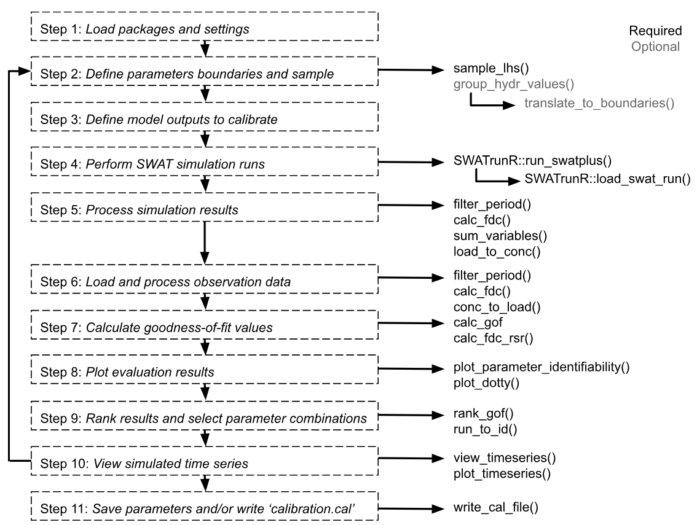

Parameter Definition
Defining the parameter set used for hard calibration
Source:vignettes/hc-par.Rmd
hc-par.RmdIntroduction
The SWATrunR package provides a framework and a set
of tools for the hard calibration of SWAT models. At its core is a
workflow generated by the initialize_hardcal() function.
This function creates four R scripts in a folder named
workflow, dividing the process into five distinct steps to
facilitate calibration and avoid a lengthy and cumbersome script.
- 01_define_parameters.R – defines the parameters to be calibrated.
- 02_define_output.R – specifies the model outputs to be saved (or calibrated).
- 03_run_swat.R – performs the SWAT model simulations.
- 04_analyze_results.R – analyzes the simulation results and compares them to observations.
- 05_validate.R - validates the calibrated model with an independent dataset.
The workflow is fully customizable to suit specific calibration needs. Each script contains all necessary guidance in the form of code comments. This web page provides an overview of the workflow and its individual steps.
Workflow Steps
Full workflow would be divided into 11 steps. The 1-2 steps in the
01_define_parameters.R, 3 -
02_define_output.R, 4 - 03_run_swat.R
and the rest in 04_analyze_results.R. The
05_validate.R script provides a simple example of
validation with 3 additional steps. The first two steps are described in
this page, the rest in the next pages. This page corresponds to the
01_define_parameters.R script.

1. Load packages and settings
Loading the required packages and settings is the first step in the workflow.
# Load required R packages ------------------------------------------------
library(SWATtunR)
library(SWATrunR)
library(hydroGOF)
library(tidyverse)
library(tibble)
library(purrr)
library(lhs)
# Parameter definition ----------------------------------------------------
# Number parameter combinations
n_combinations <- 1000
# Path to the SWAT+ project folder.
model_path <- 'test/swatplus_rev60_demo'2. Define parameters
The following section provides a suggested list and range of SWAT+ parameters for calibrating different output variables. Parameters are roughly grouped according to the processes they most strongly influence. Some of these parameter groups are optional and may be included or excluded depending on the specific objectives of the calibration.
parameter_boundaries <- tibble(
# snow (optional - use if average snow fall to precipitation ratio is
# higher than 5%)
'snomelt_tmp.hru | change = absval' = c(-1.5, 1.5),
'snofall_tmp.hru | change = absval' = c(-1.5, 1.5),
'snomelt_lag.hru | change = absval' = c(0, 1),
'snomelt_min.hru | change = absval' = c(1, 3.5),
'snomelt_max.hru | change = absval' = c(3.5, 7),
# ET (note: it is suggested that a narrow range for esco selected in soft
# calibration of water balance is used instead of the wide (0,1) range)
'esco.hru | change = absval' = c(0.05, 1),
'epco.hru | change = absval' = c(0.05, 1),
'awc.sol | change = relchg' = c(-0.25, 0.25),
#surface runoff
'cn2.hru | change = relchg' = c(-0.15, 0.10),
'cn3_swf.hru | change = absval' = c(0, 1), # Normalized range. Will be updated below
'ovn.hru | change = relchg ' = c(-0.25, 0.25),
'surlag.bsn | change = absval' = c(0.005, 4),
# lateral flow (optional - use if lateral flow constitutes at least 5% of
# total water yield)
'lat_len.hru | change = abschg' = c(-20, 20),
'latq_co.hru | change = absval' = c(0, 1), # Normalized range. Will be updated below
'bd.sol | change = relchg' = c(-0.35, 0.35),
'k.sol | change = relchg' = c(-0.5, 2),
# tile flow (optional - use if tile flow constitutes at least 5% of total
# water yield; note: tile_lag and tile_dtime should be active only if
# tile_drain is set to 0 in codes.bsn file))
'tile_dep.hru | change = relchg' = c(0.1, 0.3),
'tile_lag.hru | change = absval' = c(20, 25),
'tile_dtime.hru | change = absval' = c(50, 100),
# percolation/aquifer
'perco.hru | change = absval' = c(0, 1), # Normalized range. Will be updated below
'flo_min.aqu | change = abschg' = c(-2, 2),
'revap_co.aqu | change = absval' = c(0.02, 0.2),
'revap_min.aqu | change = abschg' = c(-2, 2),
'alpha.aqu | change = absval' = c(0.001, 0.1),
'sp_yld.aqu | change = absval' = c(0.001, 0.05),
'bf_max.aqu | change = absval' = c(0.5, 2),
# channel routing
'chn.rte | change = absval' = c(0.02, 0.3),
'chs.rte | change = relchg' = c(-0.2, 0.2),
# sediment routing
'cov.rte | change = absval' = c(0.005, 1),
'bedldcoef.rte | change = absval' = c(0.01, 1),
'cherod.rte | change = absval' = c(0.05, 1),
# nitrogen parameters from here
"n_updis.bsn | change = absval" = c(10, 80),
"nperco.bsn | change = absval" = c(0.5, 1),
"sdnco.bsn | change = absval" = c(0.75, 0.9),
"hlife_n.aqu | change = absval" = c(0, 200),
"no3_init.aqu | change = absval" = c(0, 30),
"cmn.bsn | change = absval" = c(0.001, 0.0013),
"rsdco.bsn | change = absval" = c(0.02, 0.1)
)
# Sample parameter combinations -------------------------------------------
parameter_set <- sample_lhs(parameter_boundaries, n_combinations)Appling different ranges to cn3_swf,
latq_co, and perco
This step is optional and should be removed if you do not wish to
apply different parameter ranges based on the initial values of the
parameters cn3_swf, latq_co, and
perco. By default, the SWAT+ model assigns different
initial values to these parameters during setup, based on the runoff and
leaching potentials of the respective HRUs. To preserve this spatial
variability, it is recommended to calibrate these parameters using
different ranges that correspond to their initial values.
The following routine ensures this by generating multiple parameter columns from a single sampled column. Note that the parameter must have been sampled earlier within the range of 0 to 1, so it can now be translated into different sub-ranges. These sub-ranges can also be narrowed further as part of the calibration process.
In this step, the HRUs of the SWAT+ model setup are separated into
groups based on their initial values of perco,
cn3_swf, and latq_co.
# Separate the HRUs of the SWAT+ model setup into groups based on their initial
# values of e.g. perco, cn3_swf, and latq_co
perco_groups <- group_hydr_values('perco', model_path)
cn3_groups <- group_hydr_values('cn3_swf', model_path)
latq_groups <- group_hydr_values('latq_co', model_path)
# Define parameter boundaries in which the parameter values should vary for
# the different initial values.
# The list can be a named list, the names defined here will be added to the
# parameter names for differentiation. If unnamed the indexes _1, _2, and _3
# will be added to the parameter names instead.
#
# Only provide the same numbers of ranges as numbers of individual parameters
# identified in the lines 105 to 107. Otherwise an error will occur in the
# following routine.
perco_bound <- list(low = c(0.05, 0.30), mod = c(0.30, 0.60), high = c(0.50, 0.95))
cn3_bound <- list(low = c(0.00, 0.30), mod = c(0.15, 0.45), high = c(0.50, 0.95))
latq_bound <- list(low = c(0.01, 0.30), mod = c(0.10, 0.40), high = c(0.50, 0.90))
# Add the additional parameter columns to the parameter table and remove the
# column with the respective normalized parameter values.
parameter_set <- translate_to_boundaries(par_tbl = parameter_set,
par_name = 'perco.hru | change = absval',
par_bound = perco_bound,
par_group = perco_groups)
parameter_set <- translate_to_boundaries(par_tbl = parameter_set,
par_name = 'cn3_swf.hru | change = absval',
par_bound = cn3_bound,
par_group = cn3_groups)
parameter_set <- translate_to_boundaries(par_tbl = parameter_set,
par_name = 'latq_co.hru | change = absval',
par_bound = latq_bound,
par_group = latq_groups)